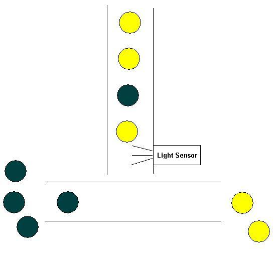

ESE = Embedded Software Engineering
Project: Sortbot
Everybody knows how demanding it is - after extensive work with Lego - to
sort the Lego bricks by colour.
You can avoid this activity.
Sortbot helps you doing this time consuming, nerveracking job.
Sortbot sorts the bricks by colour in real time.
Challenge: Sort yellow and black bricks.
The
bricks pass a light sensor.
The bricks are transported to their 'colour side'.
Scheme:

Team: Rainer
Trummer
Robert
Löffelberger
Hardware: Lego Mindstorms Robotics
Invention
Software: brickOS
0.2.6.10
Implementation details: The control software will be implemented according to
the embedded machine and the s-machine.
3 tasks have to be synchronized. One sensing task and two motor-tasks.
Timing and scheduling are done through the e- and s-machine approach.
The sensor task contains at least 2 variables: old colour and new colour. A
coulour in between
(e. g. there is no brick to be sensored) is ignored and doesn't change the new
colour value.
old colour = the old value (black or yellow)
new colour = the colour value at the end of the task.
Colour = yellow: deliver the bricks to the left.
Colour = black: deliver the bricks to the right.
Decision depending on the value of the new colour:
old colour = new colour -> cary on
old colour != new colour -> stop the first conveyer band for a fixed time
period
switch the direction of the second conveyer band
restart the first conveyer band
Purpose of the E-machine: The e-machine paradigme is used to ensure time-safe,
environment-determined and therefore
predictable behaviour of the implementation.
The e-machine is responsible for the timing of the application.
Purpose of the S-machine: Timing and scheduling are separated. Scheduling is
the job of the s-machine.
The goal: Once, e-code and s-code are defined, it should be easy to port the code to any platform.
The code: sortbot.cpp
The presentation: Sortbot.ppt
Last updated: R.L. 05.12.2004